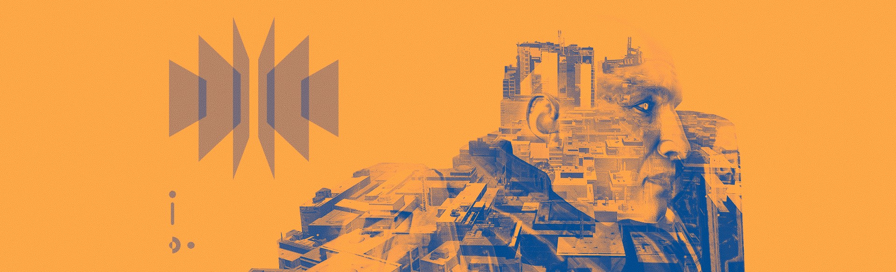

Ikora has confirmed my fears. The ice on Mars is melting.
She says it’s the Traveler’s Light—that when it awoke, it sent out a wave of Light that altered everything it touched.
I don’t know what to believe. I look at the Traveler now, shining and alive, and I remember all the times I begged it to respond. To help its chosen through our trials.
I remember its silence. Even now, it does not speak… or if it does, there is no one to hear and understand its words.
Ikora says that we cannot understand the Traveler, or its desires. They are too far removed from our own. But can we rely on something that doesn’t understand us to protect us? Or must we protect ourselves?
I think we must. I have been searching the databanks—records that even the Cryptarchs cannot access—and sifting through data that the Speaker thought too dangerous to be disseminated.
I know what is on Mars.
What is buried beneath that ice is too dangerous to allow back into our world. It doesn’t think like we do. It weighs and judges our existence in its ruthless calculations, and we don’t even know what the goal is. Once, long ago, it might have been created as a tool to save Humanity. It is far more than a mere machine now.
And it is broken.
When Saladin sealed all the records relating to SIVA, he also put a lock on certain data concerning what lies hidden on Mars. We were stumbling around blindly in those days, in the wrong place and at the wrong time, calling out to something that could not respond or understand us. And Saladin let it happen, because our failures were safer than the alternative.
But the locks are open now. I’ve studied the monsters in our past to prepare for the battles in our future. I know how to reach this particular monster before anyone else does.
Ikora is too intrigued by the knowledge it holds to heed the dangers. Cayde is wasting his time filling the Prison of Elders. It’s up to me to keep this secret buried.
To keep us safe.